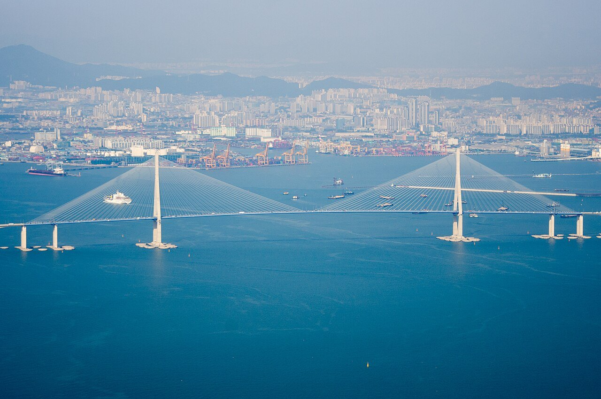
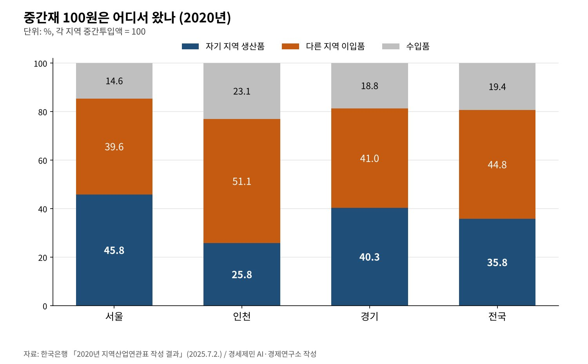
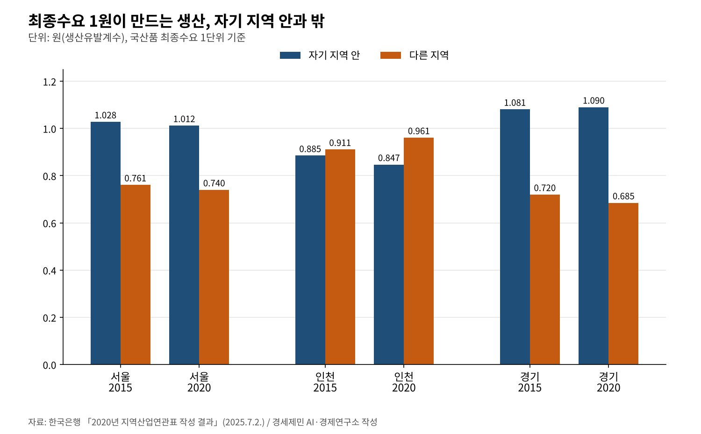

[인천 산업연관분석②] 인천 중간재, 인천산은 4분의 1… 2020년 표로 다시 본 의존 구조
한국은행 2020년 지역산업연관표, 인천 중간투입의 25.8%만 지역 안에서 조달
인천 최종수요 1원이 인천에 0.847원, 다른 지역에 0.961원 생산 유발
지역간 교역, 2015년 3조6000억원 순이출에서 2020년 13조1000억원 순이입으로
AI경세제민=김갑봉 기자 | 인천 기업이 중간재 100원어치를 쓰면 인천에서 만든 것은 25원80전이다. 51원10전은 다른 지역에서 들여오고 23원10전은 수입한다. 서울은 45원80전, 경기는 40원30전을 자기 지역에서 조달한다.
한국은행이 2025년 7월 2일 낸 2020년 지역산업연관표의 값이다. 이 연재의 옛 원고는 2015년 표를 분석한 보고서에 기댔다. 새 표가 나온 지금 다시 보니 인천의 바깥 의존은 5년 사이 오히려 짙어졌다.
이 글은 한국은행이 공표한 계수와 비중만 쓴다. 연구소가 새로 추정한 승수는 없다. 최근 두 표는 5년 간격으로 짜였고 공표까지 다시 5년이 걸렸다. 2020년이 가장 새 기준이라는 한계도 적어 둔다.

중간재 100원 가운데 인천산은 25원80전
2020년 인천의 중간투입액은 122조2000억원이다. 국산이 76.9%, 수입이 23.1%다. 국산은 인천에서 만든 것 25.8%와 다른 지역에서 들여온 것 51.1%로 나뉜다. 수입의존도는 13.1%로 전국 평균 10.7%보다 높다.
자기 지역 생산품을 쓰는 비중은 서울 45.8%, 경기 40.3%, 전국 평균 35.8%다. 인천은 수도권에서 가장 낮고 전국 평균에도 못 미친다. 17개 시도 가운데 인천보다 낮은 곳은 세종(17.6%)과 울산(25.1%)뿐이다.

공급 전체로 넓혀도 같다. 인천에 풀린 재화와 서비스 351조8000억원 가운데 지역 안 생산은 61.1%다. 서울·경기에서 들어온 몫은 17.7%로 17개 시도 가운데 가장 높다. 다른 경제권 이입은 10.9%, 수입은 10.3%다.
최종수요도 바깥에 기댄다. 인천의 최종수요 141조9000억원 가운데 인천에서 만든 것은 67.4%다. 다른 지역 생산품이 27.0%, 수입품이 5.6%다. 소비·투자·수출 순으로 보면 소비 50.1%, 투자 22.6%, 수출 27.3%다.
1원의 수요가 인천 밖에서 더 많이 만든다
생산유발계수는 최종수요 1원이 생산을 얼마나 일으키는지 보여 준다. 인천은 1.807원이다. 그 가운데 인천 안 생산은 0.847원, 다른 지역 생산은 0.961원이다. 인천의 수요가 인천보다 바깥 공장을 더 돌린다.
2015년에는 인천 안이 0.885원, 다른 지역이 0.911원이었다. 5년 사이 안은 줄고 밖은 늘었다. 서울은 1.012원 대 0.740원, 경기는 1.090원 대 0.685원으로 자기 지역 몫이 크다. 수도권에서 밖이 더 큰 곳은 인천뿐이다.
부가가치도 같은 길을 걸었다. 인천 최종수요 1원이 만드는 부가가치는 0.799원이다. 인천 안 0.389원, 다른 지역 0.410원이다. 2015년에는 안 0.391원, 밖 0.382원으로 안이 컸다. 2020년에 뒤집혔다.

취업도 반반이다. 인천 최종수요 10억원은 전업환산 기준 9.6명을 고용한다. 인천 안 4.8명, 다른 지역 4.8명이다. 인천 취업자를 만든 수요를 거꾸로 따지면 인천 최종수요가 41.9%, 다른 지역이 36.1%, 수출이 22.0%다.
순이출에서 순이입으로 돌아선 인천
지역간 교역의 방향도 바뀌었다. 2015년 인천은 81조9000억원을 내보내고 78조3000억원을 들여와 3조6000억원 순이출이었다. 2020년에는 87조7000억원을 내보내고 100조8000억원을 들여왔다. 13조1000억원 순이입이다.
같은 기간 수도권 전체의 순이출은 26조2000억원에서 72조9000억원으로 커졌다. 서울은 106조9000억원 순이출을 냈다. 경기는 순이입이 45조1000억원에서 21조원으로 줄었다. 수도권이 버는 사이 인천은 사는 쪽으로 옮겼다.
부가가치로 보면 더 또렷하다. 인천 최종수요가 다른 지역에서 만든 부가가치는 44조원이다. 다른 지역 수요가 인천에서 만든 부가가치는 33조원이다. 지역간 부가가치 이동 699조원 가운데 인천 수요가 서울에서 만든 몫이 2.3%, 경기에서 만든 몫이 2.0%다.
서울은 거꾸로다. 다른 지역 수요로 서울에 들어온 부가가치는 201조8000억원이다. 서울 수요가 밖에서 만든 것은 108조8000억원이다. 서울은 93조원의 부가가치 순이입을 거둔다. 본사와 금융, 전문서비스가 서울에 모인 데서 나온다고 연구소는 본다.
운송서비스는 강하고 생산자서비스는 약하다
인천이 전국보다 특화한 산업은 운송서비스다. 입지계수가 2.75로 인천 산업 가운데 가장 높다. 전력·가스·증기(2.16), 기계·장비(1.61), 수도·폐기물(1.48), 목재·종이·인쇄(1.41)가 뒤를 잇는다.
서울의 상위 부문은 정보통신·방송(3.42), 금융·보험(2.37), 전문·과학·기술 서비스(2.06)다. 인천은 공항과 항만으로 물건을 나르지만 그 흐름을 설계하고 돈을 대는 기능은 서울에 있다. 인천의 중간재가 서울로 향하는 까닭이다.
2024년 인천 지역내총생산 125조6000억원 가운데 운수업은 13조5370억원이다. 금융·보험업은 4조4570억원, 전문·과학·기술업은 3조3190억원에 그친다. 고용노동부도 인천 상용근로자가 제조·운수에 몰렸다고 짚었다.
인천 사람의 소득은 오히려 생산보다 크다. 2024년 인천 지역총소득은 132조4000억원으로 지역내총생산의 105.4% 수준이다. 인천 거주자가 바깥에서 받는 소득이 바깥 거주자가 인천에서 가져가는 소득보다 많다는 뜻이다.
의존을 줄이는 세 갈래
첫째는 지역 안 조달망이다. 인천 중간재의 51.1%가 다른 지역에서 온다. 인천 공장이 쓰는 부품과 서비스를 인천 기업이 공급하도록 거래를 잇는 일부터 해야 한다. 지역내 생산유발계수는 그 거래가 늘 때 오른다.
둘째는 생산자서비스다. 운송서비스 입지계수 2.75를 금융·법무·설계·정보통신으로 넓혀야 한다. 공항과 항만의 물동량을 다루는 물류금융과 무역 정보 서비스가 인천의 특화와 바로 맞닿는 분야다.
셋째는 본사와 연구 기능이다. 서울의 부가가치 순이입 93조원은 본사가 서울에 있어서 생긴다. 공장만 있는 도시는 생산이 늘어도 부가가치를 바깥에 내준다. 의사결정 기능이 인천에 와야 계수가 바뀐다.
인천은 5년 사이 더 많이 사고 덜 남기는 도시가 됐다. 2020년 표는 그 흐름을 숫자로 보여 준다. 다음 표가 나올 때 인천 안 계수가 오르려면 조달망과 서비스, 본사 기능을 지금 함께 키워야 한다.
참고문헌
기관 자료
- 한국은행 경제통계2국 국민계정부 투입산출팀, 「2020년 지역산업연관표 작성 결과」(보도자료, 붙임 포함), 2025년 7월 2일(7월 3일 조간). KDI 경제교육·정보센터 게재. https://eiec.kdi.re.kr/policy/materialView.do?num=268345
- 국가데이터처, 「2024년 지역소득(잠정)」, 2025년 12월 23일. KDI 경제교육·정보센터 게재. https://eiec.kdi.re.kr/policy/materialView.do?num=275164
- 고용노동부, 「2026년 8월 사업체노동력조사 및 2026년 4월 시도별 임금·근로시간조사 결과」, 2026년 9월 30일. KDI 경제교육·정보센터 게재. https://eiec.kdi.re.kr/policy/materialView.do?num=287627
[사진 출처]
- [사진1] Cameron Henderson, "Incheon Grand Bridge.jpg", 위키미디어 공용, 퍼블릭 도메인. https://commons.wikimedia.org/wiki/File:Incheon_Grand_Bridge.jpg
※ 이 기사는 AI 프로그램 클로드를 활용해 작성했습니다.
관련기사
- [인천 산업연관분석③] 공장은 더 만들고 일자리는 줄었다, 인천 산업의 두 얼굴
- [인천 산업연관분석④] 인천 지역내총생산 125조6000억원, 1인당은 전국의 83%
- [서평] 슘페터 『경제분석의 역사』 1권, 300년 전 질문이 오늘도 유효하다
- [서평] 『진보를 위한 주식투자』, 일하는 사람은 자본시장을 외면해도 되는가
저작권자 © AI경세제민 무단전재 및 재배포, AI학습 및 활용 금지